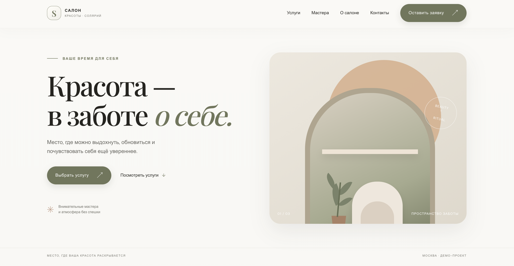
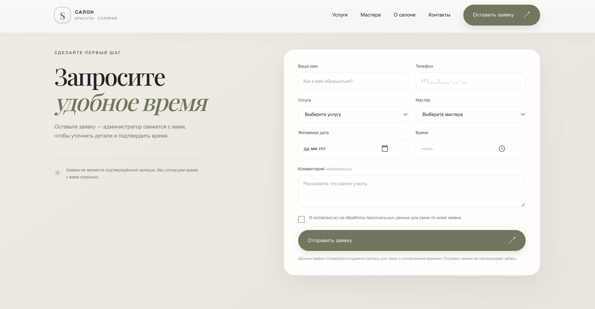
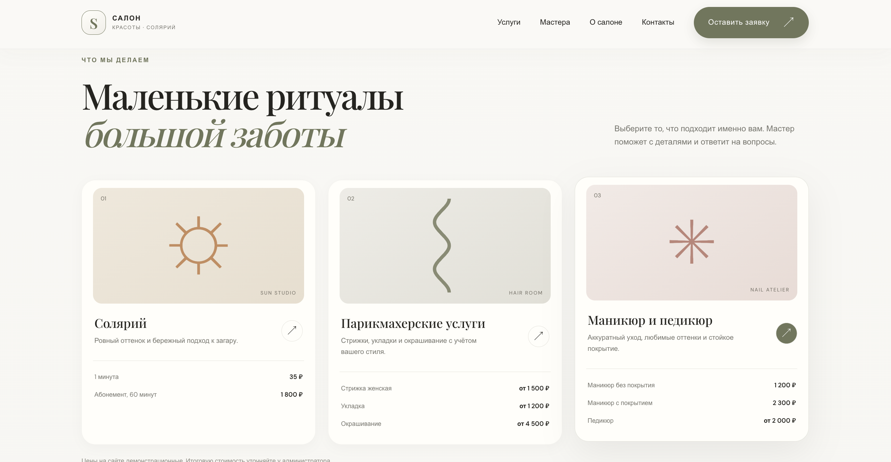
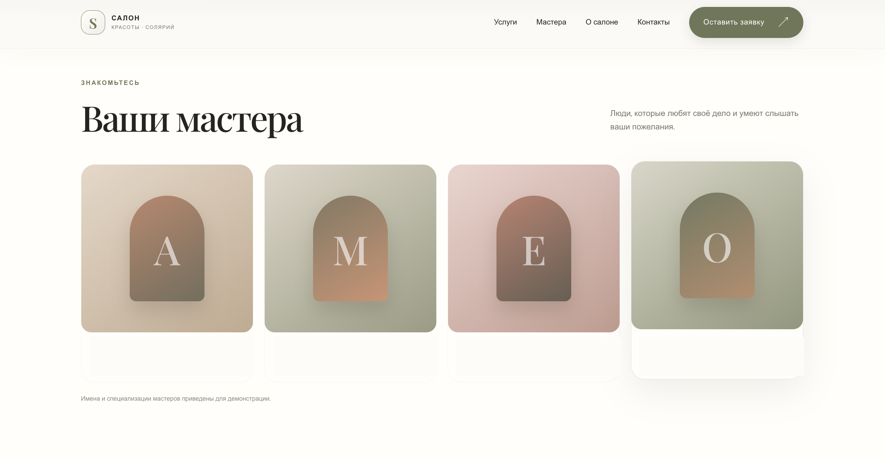
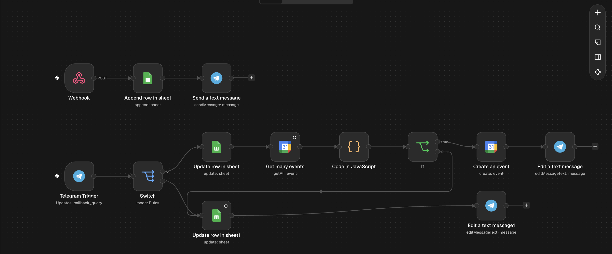
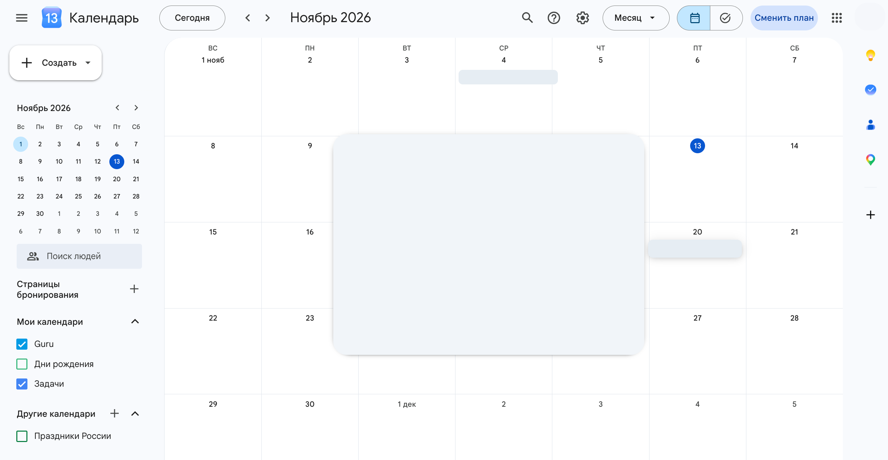
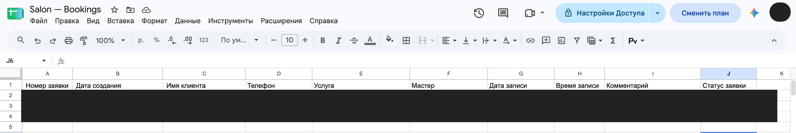

01
Веб-разработка
Сайты и цифровые продукты с продуманной структурой, интерфейсом и адаптацией под разные экраны.
Обсудить проект ↗︎ROMAN DIGITAL · PERSONAL PORTFOLIO
Цифровые идеи. Точная реализация.
DIGITAL-СПЕЦИАЛИСТ ROMAN
Сайты, автоматизация и AI-инструменты — в цельную цифровую систему для вашего проекта.
01 / ОБО МНЕ
R—01Я — Роман, digital-специалист. Помогаю превращать задачи бизнеса в понятные цифровые решения.
Меня зовут Роман. Занимаюсь разработкой современных сайтов, дизайном и автоматизацией бизнес-процессов.
Создаю цифровые решения, которые сочетают в себе продуманный дизайн, удобство использования и современные технологии.
Обсудить задачу ↗︎Структура и сценарии, которыми удобно пользоваться.
Дизайн работает на смысл и узнаваемость.
Рутина автоматизируется, важное остаётся человеку.
02 / ЧТО Я ДЕЛАЮ
04 НАПРАВЛЕНИЯСайты и цифровые продукты с продуманной структурой, интерфейсом и адаптацией под разные экраны.
Обсудить проект ↗︎Связки между сервисами, сценарии и процессы, которые экономят время на повторяющихся задачах.
Обсудить проект ↗︎Практичное применение AI: от исследования сценария до настройки ассистентов и рабочих прототипов.
Обсудить проект ↗︎Визуальные концепции и интерфейсы, которые собирают цифровой продукт в цельное впечатление.
Обсудить проект ↗︎03 / ИЗБРАННОЕ
ПОРТФОЛИОСобственный демо-проект: онлайн-запись, уведомления администратору и учёт заявок в одной системе.
CASE / 01
Система онлайн-записи для салонов красоты, которая упрощает приём и обработку заявок клиентов.
Дать клиенту возможность выбрать услугу, мастера, дату и время, а администратору — обработать заявку в одном процессе.
Самостоятельно спроектировал логику, создал сайт, настроил автоматизацию и интеграции сервисов.
Создана работающая демо-система. Проверены получение заявки, подтверждение, отклонение и добавление подтверждённой записи в календарь.
Услуга · мастер · дата · время
Передаёт заявку и запускает сценарий
ВИЗУАЛЬНЫЙ ОБЗОР
В клиентских данных, карточке календаря и именах мастеров личная информация скрыта.







04 / ИНСТРУМЕНТАРИЙ
WORKFLOWИспользую современные инструменты для дизайна, разработки и автоматизации.
05 / КОНТАКТЫ
НА СВЯЗИЕСТЬ ЗАДАЧА?